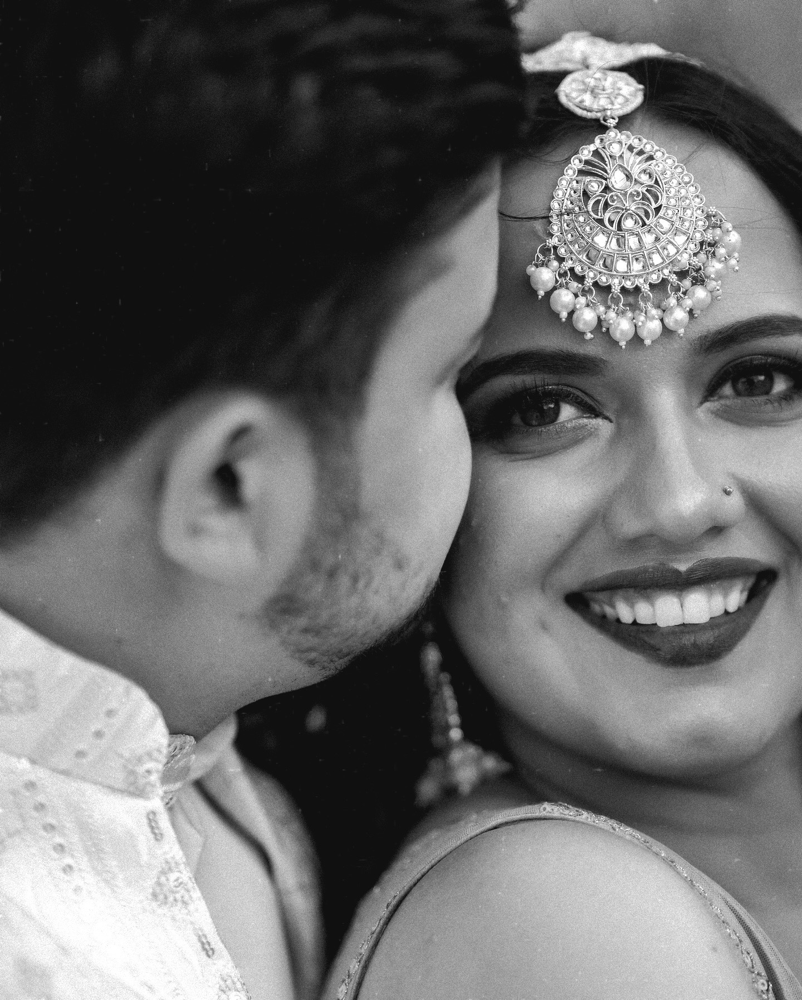

Behind the Lens: How We Capture Wedding Emotions

Weddings are more than ceremonies — they are timeless stories of love, laughter, and heartfelt moments. At Pana Production, our mission is not just to document events but to capture the emotions that make each love story unique. Every smile, every tear, every glance is a memory waiting to be preserved.
The Art of Anticipation
One of the most beautiful parts of wedding photography and videography is anticipation. We don’t just point our cameras at the stage — we watch for the nervous smiles before vows, the tearful eyes of proud parents, and the joyful embrace of friends. These fleeting seconds carry the true essence of the day.

Cinematic Storytelling
For us, weddings are like films where the couple is the lead role. Our approach combines luxury cinematography with storytelling — soft lighting, elegant compositions, and a flow that feels natural rather than staged. The result? Photographs and films that don’t just show what happened, but make you feel it all over again.

Details That Speak Volumes
A wedding’s beauty often lies in the little things — the delicate lace on a gown, the sparkle in the groom’s cufflinks, or the flicker of candles at the reception. We carefully frame these details to weave them into the bigger narrative, giving each couple a collection that feels complete and deeply personal.

Our Promise
When you look back at your wedding film or album, you shouldn’t just see the day — you should relive it. At Pana Production, we promise to capture not only how your wedding looked but also how it felt.

Because every love story deserves to be told, not just remembered.